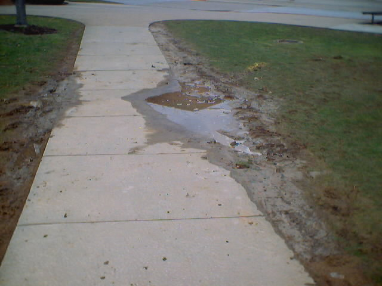
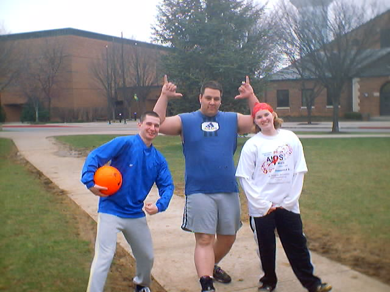
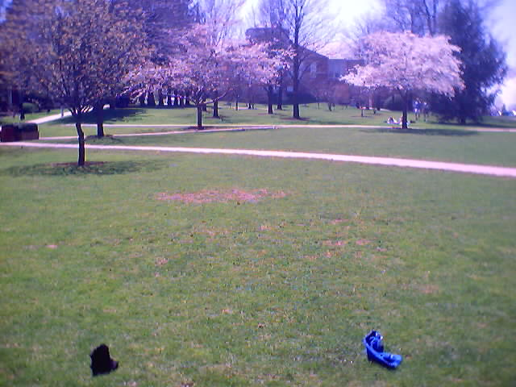

[ Main
| Schedule
| Rules
| Teams
| Message Board
| Weather
| World Cup News ]
The Games
For tournament action not in seasn, click here.
Game 1: 3/31 @12:30:
Elton John Fan Club 8
Sexy Bitches FC 5
This was a tight game for the opening game of the friendly season. Conditions were wet, but the Quad and players survived. Craig decided to show everyone his skills but it wasn't enough to get the score high enough to over come the Elton John FC. Andy Ewing was king of assists and Marie proved she is the craziest person out there after beating up most of the guys on the other team. Overall, close game, very competitive with the winners victorious due to being in better shape (except for Ben who was hung over). But, the sexy bitches are still sexy.
Stats: Sexy Bitches FC - Craig (playing for the missing Matt scored 3 goals and had 1 assist, Rob had 2 goals, Jason had 1 assist, and Marie had 2 assists.
Elton John Fan Club - Lee scored 6 goals, Andy had 5 assists and 1 goal, Ben had 1 goal and 1 assist, Chris (playing for Sean "Weed") has 2 assist.

The pond in the field for the premier games.
Game 2: 3/31 @ 3:30:
Mrs. Wolf is Hot! 5
It's the Water 7
This was a very intense game. We figured out a lot of rules and people will be happy later. The game was tied with 15 minutes left and It's the Water scored to bring it to 5-6. Overall, teams were very good. Mrs. Wolf is Hot! relied a lot on the fast break and also had all around great defence. The next few games should prove better for them. It's the Water had great performances from all players with Maciej stretching out for some great saves on defence. I would say this was a game for defence to show. Fast breaks are definately the best way to score since 7 people crashing the box makes it pretty hard to score.
Stats: Mrs. Wolf is Hot! - Keagan scored 2 goals and had 2 assists. James had 1 goal and Andy M. scored 2.
It's the Water - Craig (playing for the sick Clint) scored 2 goals. Josh had 3 goals, Steve had 1 assist, Maciej had 2 goals
Game 3: 4/1 @ 2:00:
Oh, wait, no one showed up for this one except the people below. Maybe next time.

Lisa, Dan, and Mike Y. who braved the weather for the third game.
Game 3(revisited): 4/3:
Spida United 10
Team 4 (without whole team) 5
Well this game was interesting since the people off of team 4 didn't show up. Things have since been changed and people recruited whole will show up. Ben had to come and fill in and that wasn't very pretty. Tyler and Calvin showed up second half and teams were mixed up for some competition. Overall, very fun game. Lots of running and some impressive skills. Most goals were a result of lack of defense and most goals Team 4 didn't score a result of not setting anything up. Biggest play: Mike Y. holding his ground against a charging Ian and I an didn't win. Good game though with the new Team 4 really out to show eevryone whats up.
StatsSpida United: Mike 1 goal, Todd 4 goals (1 assist), Matt W. with 4 goals (4 assist) and the late coming dancing man Calvin with 1 goal.
Team 4 (still no name though Team Lisa has been recommended): Lisa 1 goal, Ben(playing for the rest of the missing team) 2 goals, Tyler (yes, he really was on the other team) with 2 goals and 1 assist.
Game 4: 4/7: 1:30
Sexy Bitches 8
Spida United 7
Well, as the score says, this was one close game. Both teams played aggresive as anything but unfortunately left the defence to fend for themselves. Skills were a major part, especially with the Rob-Matt connection. Also, Jason F. cleaned up with 4 goals being the most scoring player fo the game tied with the sub Josh. Mike Y. had some huge stops on D througout the game. After the half it was tied at 5 until with 15 minutes left, SBFC scored out of nowhere. The retaliation looked bleak especially when they SBFC brought it up to 8 but with two minutes left, Spida United connected for a goal. Not enough though and te clock ran out leaving Sexy Bitches FC with the victory. Great game.
Stats: Sexy Bitches FC: Jorges had 1 goal, 1 assist. Jason had 4 goals and 2 assists. Rob had 3 goals and Matt amazingly had only 1 assist.
Spida United: missing tyler the played with Josh off of Its the Water. Matt W. scored 2 goals and had 3 assists. Josh, subing for Tyler, had 4 goals and 1 assist. Todd also had 1 goal.
Game 5: 4/7: 3:30
Elton John FC 10
Its the Water 5
This game would've been more interesting had the true players of each team been playing the same time. Still it was a tuff match with Clint and Craig making their debuts on the team with impressive performances. Elton John FC was missing players so Brian came in to help. In the first 3 minutes there were 2 consecutive luxery cars hit which is very impressive. Unfortunately these do not count as goals in Quad Cup. First half was very tight but by second half with Its the Water missing Craig and Clint and battling the team with Brian, an unfair advantage was taking. Since it was only a friendly this wasn't a problem but is just a great example of why players need to be there for their own teams and no subs (from other teams) will be allowed in tournament play. The actual game was a great representation of some good teams playing good soccer. Cold air finally got the best of everyone though and a huge lead was made second half by the Elton John FC. Its the Water still has some huge promise if they all show up and stay.
Stats: Elton John Fan Club: Ben had one assist, Sean had 1 goal and 1 assist, Lee had 4 goals and 1 assist. Chris, filling in for some of the missing players had 1 goal and 1 assist. Brian also filling in had 4 goals mostly in the second half.
Its the Water: Clint had 1 goal, and Josh had 4 goals to make a total of 8 goals in two consecutive games.
Game 6: 4/7: 3:30
Mrs. Wolf is Hot! 8
Elton John FC 5
(Written by Josh) Wndy hit car at 1 min 30 sec. James takes out his frustration on Marcus by kicking stuff at him. Messmore misses yet again at 8 mi 10 sec into second half. Keagan mumbles something inane at me and then gets upset when I don't understand him @ 16 min into second. Some bum named Jason Lowry starts harrasong the score keeper with 10:30 left in second half. Kris is hit by car in quad with 7:00 mins left.
Stats:Elton John FC: Lee 2 goals, Lindsay 1 goal and chris P had 1 goal with James scoring an own goal.
Mrs. Wolf is Hot!: Aramus 1 goal, Keagan 3, Andy M. 1, Dan 1 and James had 2 goals.

The beautifully manicured field of play.
Game 7: 4/13
Its the Water 13
Spida United 6
Well, this was a great game on a gorgeous day. It was a bit windy but the soccer skills of the players was great to watch. Many incredible plays were had by all. Spida United really didn't get their defence figured out till the last few minutes of the game. Expect to see improvement on those lines at their next game. Its the Water really pulled together and had great plays with everyone contributing. Steve got the sharpshooter award for 4 consecutive goals at no angle, perfectly legal. The score might not show it but this was a great game.
Stats:Its the Water: Clint had 7 goals, Maciej had 3 goals, Steve had 4 and Craig helped everyone else out with 5 assists.
Spida United: Matt had 4 goals and 2 assists, Tyler had 1 goal and 1 assists. Mike had 1 goal and Todd had 1 goal and 1 assist.
Game 8: 4/16
Team 4 10
Elton John FC 9
Well, team 4's premier performance was a good one. They were missing Mike D. but they had some help from Elton John FC with Sean and managed to do quite well. Elton John FC just didn't connect with Ben doing the best while on the side. Highlights: Brian scored a goal and then hit a minivan, got a standing applause from the crowd. The tree on the south side of the field had an assist for a cheap goal for Elton John. Hopefully, elton john will be able to play next week as the tournament starts. Team 4 still has some more games to prove themselves so who knows...
Stats: Elton John FC: Lee had 5 goals with two assists. Ben had one assist and Jamie's premier performance got him 4 goals and 2 assists.
Team 4: Chris had 1 assist, Brian had 5 goals, Phil had 1 goal and 1 assist. Sean playing as a sub had 3 goals (traitor!). Another walk on for the game was Jen and had 1 goal.
Game 9: 4/18 (with 22 and a half minute halves)
Mrs. Wolf is Hot! 13
Sexy Bitches FC 1
This score really isn't a fair representation of how good the game was. The sexy bitches were missing their regulars with Craig filling in for Rob and Lisa filling in for the injured Marie. Josh also helped em out but to no avail. Mrs. Wolf played really well with some great plays including Andy M. taking the ball from Craig in front of the goal and then missing the shot. Dan Saul had his premier game and will now be playing with the bitches.
Stats:Mrs Wolf is Hot!: Dan Saul (filling in for Aramus) had 1 goal and an assist. Dan had 1 goal and 2 assists. Andy M. had 4 goals and 2 assists. James had 1 goal and an assist. Keagan had 6 goals and 2 assists.
Sexy Bitches FC: Matt had a great play to score the only goal.
Game 10: 4/19 (with 22 and a half minute halves)
Sexy Bitches FC 6
Team 4 5
As the score can tell you, this was a great game. Both teams were missing some key players but we kept it even moving Clint on in the middle of the first half and then off of Team 4 for the last 10 minutes of play. Phil had the first blood of the league on his right knee. The game was tied with 7 minutes to go and then Rob came in and scored with 2 and a half minutes to go. There was an injury to Jason by Phil with 1 minute. Jason pulled it together though and played the remaining minute (which is good since there were no subs at this point, Matt left early). There was a breakaway and long ball to Phil in front of the goal but Dan Saul's presence and speed saved his team and the ball went wide with only 15 seconds left. Great game!
Stats:Sexy Bitches FC: Dan Saul had one assist, Jason had 2 assists. Matt had 1 goal and 1 assist. Jorges had 2 goals and 1 assist. Rob had 2 goals.
Team 4: Chris had 1 goal, Brian had 2 goals. Ohil had an assist. Lisa had a goal and Clint had 1 goal and 1 assist.
Game 11: 4/20: 1:30
Its the Water 12
Team 4 8
Well this game was intense. This is the first game where the team that was behind initially came back for a win. At 17 min remaining in the second half, the score was tied at 7. This was also after the run in with groundskeeper Willie who wanted to regulate on the game. We told him what was up though and he ran off seeing how unfair he was being. Later second half we even had Officer Bob who was sent by Groundskeeper Willie to try to enforce some more. Andy M. and Ben were able to combat his pleas with pretty good BS and statements of our rights. Hegot the drift too and left us alone. This game was the first game Team 4 had all their key players but were missing phil and ian due to other things. The endurance and style of Its the Water triumphed though leaving Its the Water with a bye in the tournament.
Stats:Its the Water: Clint had 4 goals and craig had 1 goal and 5 assists. Maciej had 3 goals and 1 assist. Josh also had 4 goals in true cherry picker form.
Team 4: Chris had 2 goals (a game high for him) with 1 assist. Brian had 5 goals and 1 assist and Lisa had 1 goal.
Game 12: 4/20: 3:30
Spida United 7
Mrs. Wolf is Hot! 2
Due to what was riding on this game, it gave us a taste of what tournament play was going to be. Very hard playing with people getting upset and many hard potential fouls. It went well though and Spida United had some help, which is alright since it is still friendly play, with Lee filling in for the resting Tyler and Dan Saul coming in to fill for the missing 2 players of mike and joe M. The game was very good none the less with no more run ins with authority. This will be an intersting match if it happens again during tournament play with the true roosters combating each other. Watch out, TOURNAMENT TIME!!!
Stats:Spida United: Matt W. had 3 goals and lee had 2 goals and 2 assists. Todd also helped out with 2 goals.
Mrs. Wolf is Hot!: Keagan was the lone force here making with 2 only goals.
The tournament game stats and reviews are on the tournament page.